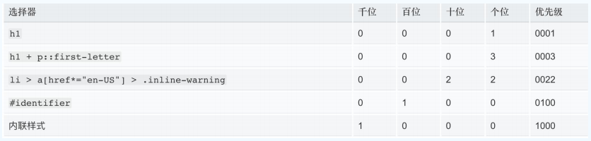

<!DOCTYPE html>
<html>
<head><meta name="generator" content="Hexo 3.9.0">
  <meta charset="utf-8">
  

  
  <title>css学习笔记 | SheilaTing 的博客呀</title>
  <meta name="viewport" content="width=device-width, initial-scale=1, maximum-scale=1">
  <meta name="description" content="css引入方式 link方式在html页面中引用 &amp;lt;link rel=&amp;quot;stylesheet&amp;quot; href=&amp;quot;index.css&amp;quot;&amp;gt;  @import 方式在 style标签或者 css文件中引入，注意在CSS文件中引入时，要在顶部引入（即前面无css语句）且句尾要用分号;结束 否则不生效 例如：          @import url(&quot;ind">
<meta property="og:type" content="article">
<meta property="og:title" content="css学习笔记">
<meta property="og:url" content="http://yoursite.com/2020/04/06/css学习笔记/index.html">
<meta property="og:site_name" content="SheilaTing 的博客呀">
<meta property="og:description" content="css引入方式 link方式在html页面中引用 &amp;lt;link rel=&amp;quot;stylesheet&amp;quot; href=&amp;quot;index.css&amp;quot;&amp;gt;  @import 方式在 style标签或者 css文件中引入，注意在CSS文件中引入时，要在顶部引入（即前面无css语句）且句尾要用分号;结束 否则不生效 例如：          @import url(&quot;ind">
<meta property="og:locale" content="default">
<meta property="og:image" content="http://yoursite.com/2020/04/06/css学习笔记/cal.png">
<meta property="og:updated_time" content="2020-04-15T04:14:54.718Z">
<meta name="twitter:card" content="summary">
<meta name="twitter:title" content="css学习笔记">
<meta name="twitter:description" content="css引入方式 link方式在html页面中引用 &amp;lt;link rel=&amp;quot;stylesheet&amp;quot; href=&amp;quot;index.css&amp;quot;&amp;gt;  @import 方式在 style标签或者 css文件中引入，注意在CSS文件中引入时，要在顶部引入（即前面无css语句）且句尾要用分号;结束 否则不生效 例如：          @import url(&quot;ind">
<meta name="twitter:image" content="http://yoursite.com/2020/04/06/css学习笔记/cal.png">
  
    <link rel="alternate" href="/atom.xml" title="SheilaTing 的博客呀" type="application/atom+xml">
  
  
    <link rel="icon" href="/favicon.png">
  
  
    <link href="//fonts.googleapis.com/css?family=Source+Code+Pro" rel="stylesheet" type="text/css">
  
  <link rel="stylesheet" href="/css/style.css">
</head>
</html>
<body>
  <div id="container">
    <div id="wrap">
      <header id="header">
  <div id="banner"></div>
  <div id="header-outer" class="outer">
    <div id="header-title" class="inner">
      <h1 id="logo-wrap">
        <a href="/" id="logo">SheilaTing 的博客呀</a>
      </h1>
      
    </div>
    <div id="header-inner" class="inner">
      <nav id="main-nav">
        <a id="main-nav-toggle" class="nav-icon"></a>
        
          <a class="main-nav-link" href="/">Home</a>
        
          <a class="main-nav-link" href="/archives">Archives</a>
        
      </nav>
      <nav id="sub-nav">
        
          <a id="nav-rss-link" class="nav-icon" href="/atom.xml" title="RSS Feed"></a>
        
        <a id="nav-search-btn" class="nav-icon" title="Search"></a>
      </nav>
      <div id="search-form-wrap">
        <form action="//google.com/search" method="get" accept-charset="UTF-8" class="search-form"><input type="search" name="q" class="search-form-input" placeholder="Search"><button type="submit" class="search-form-submit">&#xF002;</button><input type="hidden" name="sitesearch" value="http://yoursite.com"></form>
      </div>
    </div>
  </div>
</header>
      <div class="outer">
        <section id="main"><article id="post-css学习笔记" class="article article-type-post" itemscope itemprop="blogPost">
  <div class="article-meta">
    <a href="/2020/04/06/css学习笔记/" class="article-date">
  <time datetime="2020-04-06T10:55:30.000Z" itemprop="datePublished">2020-04-06</time>
</a>
    
  </div>
  <div class="article-inner">
    
    
      <header class="article-header">
        
  
    <h1 class="article-title" itemprop="name">
      css学习笔记
    </h1>
  

      </header>
    
    <div class="article-entry" itemprop="articleBody">
      
        <h4 id="css引入方式"><a href="#css引入方式" class="headerlink" title="css引入方式"></a>css引入方式</h4><ul>
<li><p>link方式在html页面中引用</p>
<p><code>&lt;link rel=&quot;stylesheet&quot; href=&quot;index.css&quot;&gt;</code></p>
</li>
<li><p>@import 方式在 style标签或者 css文件中引入，注意在CSS文件中引入时，要在顶部引入（即前面无css语句）且句尾要用分号;结束 否则不生效</p>
<p>例如：        </p>
<style>
@import url("index.css");
@import url('index.css');
@import url(index.css);
@import 'custom.css';
@import "common.css";
@import url('landscape.css') screen and (orientation:landscape);
</style>

</li>
</ul>
<h4 id="link方式和-import引入CSS有-什么区别？"><a href="#link方式和-import引入CSS有-什么区别？" class="headerlink" title="link方式和@import引入CSS有 什么区别？"></a>link方式和@import引入CSS有 什么区别？<a id="more"></a></h4><figure class="highlight plain"><figcaption><span>@import是CSS的语法，JS无法操控 • 两个			link标签，文件会并行加载。 一个link的CSS里包含一个@import， 文件串行加载会更慢。因此不推荐用@import```</span></figcaption><table><tr><td class="gutter"><pre><span class="line">1</span><br><span class="line">2</span><br><span class="line">3</span><br><span class="line">4</span><br><span class="line">5</span><br><span class="line">6</span><br><span class="line">7</span><br><span class="line">8</span><br><span class="line">9</span><br><span class="line">10</span><br><span class="line">11</span><br><span class="line">12</span><br><span class="line">13</span><br><span class="line">14</span><br><span class="line">15</span><br><span class="line">16</span><br><span class="line">17</span><br><span class="line">18</span><br><span class="line">19</span><br><span class="line">20</span><br><span class="line">21</span><br><span class="line">22</span><br><span class="line">23</span><br><span class="line">24</span><br><span class="line">25</span><br></pre></td><td class="code"><pre><span class="line"></span><br><span class="line">#### css语法</span><br><span class="line"></span><br><span class="line">		&lt;style&gt; p &#123;font-size: 20px; &#125;@media print &#123; font-size: 60px; &#125; &lt;/style&gt;</span><br><span class="line">		选择器 &#123;</span><br><span class="line">	    	属性: 值; </span><br><span class="line">	    	属性: 值; </span><br><span class="line">	    			&#125;</span><br><span class="line">	    @关键字 &#123;</span><br><span class="line">	    			其他 </span><br><span class="line">	    					&#125;</span><br><span class="line"></span><br><span class="line">#### css选择器</span><br><span class="line"></span><br><span class="line">- 元素选择器（标签选择器）</span><br><span class="line"></span><br><span class="line">- ID选择器</span><br><span class="line"></span><br><span class="line">- class 选择器</span><br><span class="line"></span><br><span class="line">- 通用选择器 *</span><br><span class="line"></span><br><span class="line">- 属性选择器</span><br><span class="line"></span><br><span class="line">  ``` [attr~=val] 仅选择 attr 属性的值（以空格间隔出多个值） 中有包含 val 值的所有元素，比如位于被空格分隔的多个 类（class）中的一个类。 ü [attr*=val] 选择 attr 属性的值中包含字符串 val 的元素。 ü [attr^=val] 选择 attr 属性的值以 val 开头（包括val）的 元素。 ü [attr$=val] 选择 attr 属性的值以 val 结尾（包括val）的 元素。 ü [attr|=val] 选择 attr 属性的值是val或以 val-开头的元素 （-用来处理语言编码）。</span><br></pre></td></tr></table></figure>
<ul>
<li><p>组合选择器</p>
<p>   <code>A, B 并集选择器 A, B 同时选中A 和 B</code></p>
<ul>
<li><p>A B 后代选择器 选中A的后代B元素，注意A和B之间有个空格</p>
</li>
<li><p>AB  选中既是A又是B的元素，注意A和B之间没有空格</p>
</li>
<li><p>A &gt; B  选中A 的直接子元素B</p>
<figure class="highlight html"><table><tr><td class="gutter"><pre><span class="line">1</span><br></pre></td><td class="code"><pre><span class="line"><span class="tag">&lt;<span class="name">ul</span> <span class="attr">class</span>=<span class="string">”detail”</span>&gt;</span> <span class="tag">&lt;<span class="name">li</span>&gt;</span><span class="tag">&lt;<span class="name">ul</span>&gt;</span><span class="tag">&lt;<span class="name">li</span>&gt;</span>aaa<span class="tag">&lt;/<span class="name">li</span>&gt;</span> <span class="tag">&lt;/<span class="name">ul</span>&gt;</span> <span class="tag">&lt;/<span class="name">li</span>&gt;</span> <span class="tag">&lt;<span class="name">li</span>&gt;</span>bbb<span class="tag">&lt;/<span class="name">li</span>&gt;</span> <span class="tag">&lt;/<span class="name">ul</span>&gt;</span> <span class="tag">&lt;<span class="name">style</span>&gt;</span><span class="css"> <span class="selector-class">.detail</span> <span class="selector-tag">li</span> &#123; <span class="attribute">border</span>: <span class="number">1px</span> solid red; &#125;</span><span class="tag">&lt;/<span class="name">style</span>&gt;</span></span><br></pre></td></tr></table></figure>
</li>
<li><p>A + B  选中A 的下一个相邻元素B</p>
</li>
<li>A ~ B  选中A 的后面全部相邻元素B</li>
</ul>
</li>
</ul>
<h4 id="伪元素与伪类"><a href="#伪元素与伪类" class="headerlink" title="伪元素与伪类"></a>伪元素与伪类</h4><blockquote>
<p>伪类是一个选择器，用来选择处于特定状态的元素。 ü 比如某种类型元素的第一个、元素的鼠标放置上的 状态 ü 类似于给元素加了个额外的class</p>
</blockquote>
<ul>
<li><p>伪类/first-child</p>
<p>作为自己父亲的第x个孩子</p>
</li>
<li><p>伪类/first-of-type</p>
<p>作为自己父亲当前标签类型的第x个孩子 ü first-of-type、last-of-type、nth-of-type(n)</p>
</li>
<li><p>伪类 :link - :visited - :hover - :active</p>
</li>
<li><p>更多伪类</p>
<ul>
<li>• :checked ü 选中被勾选的表单元素 •</li>
<li>:disabled ü 选中被禁用的表单元素 •</li>
<li>:focus ü 选中被激活的表单元素 • :root ü 选中根节点</li>
</ul>
</li>
<li><p>• :target  选中页面上id为当前hash的元素 </p>
<p>实战1 • 不使用JS实现一个Tab切换 <a href="http://js.jirengu.com/fikan" target="_blank" rel="noopener">http://js.jirengu.com/fikan</a> ü 实战2 • 不使用JS实现弹框 <a href="http://js.jirengu.com/neyul" target="_blank" rel="noopener">http://js.jirengu.com/neyul</a> • :not(xx) ü 选中不为xx的元素</p>
<h4 id="伪元素"><a href="#伪元素" class="headerlink" title="伪元素"></a>伪元素</h4></li>
<li><p>::before、 ::after</p>
<p>在元素内插入一段内容，作为元素的第一个/最后一个 孩子 ü 必须有 content 属性 ü 常用来替代图标、无实际意义的标签</p>
</li>
<li><p>::first-line ü 选中段落的第一行 •</p>
</li>
<li>::first-letter ü 选中段落的第一个字符</li>
<li><p>::selection ü 匹配被鼠标选中的文字内容</p>
<h4 id="css层叠样式表-（选择器权重，优先级）"><a href="#css层叠样式表-（选择器权重，优先级）" class="headerlink" title="css层叠样式表 （选择器权重，优先级）"></a>css层叠样式表 （选择器权重，优先级）</h4></li>
</ul>
<ul>
<li>样式来源 </li>
<li><ol>
<li>使用不同的选择器设置的样式 </li>
</ol>
</li>
<li><ol start="2">
<li>浏览器默认样式 (user agent stylesheet) </li>
</ol>
</li>
<li><ol start="3">
<li>继承的样式 (Inherited from xxx)</li>
</ol>
<h4 id="优先级顺序"><a href="#优先级顺序" class="headerlink" title="优先级顺序"></a>优先级顺序</h4><p>!import &gt; 内联样式 &gt; 选择器设置样式 &gt; 浏览器默认样式 &gt; 继承样式</p>
<p>!import的优先级最高  尽量少用!import，除非迫不得已 • 比如队友写了垃圾代码如内联样式，需要覆盖掉 • 比如有一些高优先级的代码，只能通过!import来覆盖</p>
<p>浏览器默认样式</p>
<p>继承样式</p>
<h4 id="继承属性与非继承属性"><a href="#继承属性与非继承属性" class="headerlink" title="继承属性与非继承属性"></a>继承属性与非继承属性</h4><p>color、 font-size、font-family、line-height</p>
<h4 id="非继承属性"><a href="#非继承属性" class="headerlink" title="非继承属性"></a>非继承属性</h4><p>border、background、margin、padding、display…</p>
<h4 id="如何查询该属性是否可继承"><a href="#如何查询该属性是否可继承" class="headerlink" title="如何查询该属性是否可继承"></a>如何查询该属性是否可继承</h4><p><a href="https://www.w3.org/TR/CSS21/propidx.html" target="_blank" rel="noopener">https://www.w3.org/TR/CSS21/propidx.html</a></p>
<h4 id="优先级计算"><a href="#优先级计算" class="headerlink" title="优先级计算"></a>优先级计算</h4><p>千位： 如果声明在 style 的属性（内联样式）则该位得一分 ü 百位： 选择器中包含ID选择器则该位得一分 ü 十位： 选择器中包含类选择器、属性选择器或者伪类则该位得一分。 ü 个位：选择器中包含元素、伪元素选择器则该位得一分。</p>
<p></p>
</li>
</ul>

      
    </div>
    <footer class="article-footer">
      <a data-url="http://yoursite.com/2020/04/06/css学习笔记/" data-id="ck9mo2f2n0004isw1p3od8wf5" class="article-share-link">Share</a>
      
      
    </footer>
  </div>
  
    
<nav id="article-nav">
  
    <a href="/2020/04/10/hello-world/" id="article-nav-newer" class="article-nav-link-wrap">
      <strong class="article-nav-caption">Newer</strong>
      <div class="article-nav-title">
        
          Hello World
        
      </div>
    </a>
  
  
    <a href="/2019/08/24/js-event/" id="article-nav-older" class="article-nav-link-wrap">
      <strong class="article-nav-caption">Older</strong>
      <div class="article-nav-title">js-event</div>
    </a>
  
</nav>

  
</article>

</section>
        
          <aside id="sidebar">
  
    

  
    
  <div class="widget-wrap">
    <h3 class="widget-title">Tags</h3>
    <div class="widget">
      <ul class="tag-list"><li class="tag-list-item"><a class="tag-list-link" href="/tags/JS/">JS</a></li><li class="tag-list-item"><a class="tag-list-link" href="/tags/css/">css</a></li><li class="tag-list-item"><a class="tag-list-link" href="/tags/js/">js</a></li><li class="tag-list-item"><a class="tag-list-link" href="/tags/webpack/">webpack</a></li><li class="tag-list-item"><a class="tag-list-link" href="/tags/对象/">对象</a></li><li class="tag-list-item"><a class="tag-list-link" href="/tags/正则表达式/">正则表达式</a></li><li class="tag-list-item"><a class="tag-list-link" href="/tags/网站建站案例练习/">网站建站案例练习</a></li><li class="tag-list-item"><a class="tag-list-link" href="/tags/递归/">递归</a></li></ul>
    </div>
  </div>


  
    
  <div class="widget-wrap">
    <h3 class="widget-title">Tag Cloud</h3>
    <div class="widget tagcloud">
      <a href="/tags/JS/" style="font-size: 10px;">JS</a> <a href="/tags/css/" style="font-size: 20px;">css</a> <a href="/tags/js/" style="font-size: 15px;">js</a> <a href="/tags/webpack/" style="font-size: 10px;">webpack</a> <a href="/tags/对象/" style="font-size: 10px;">对象</a> <a href="/tags/正则表达式/" style="font-size: 10px;">正则表达式</a> <a href="/tags/网站建站案例练习/" style="font-size: 10px;">网站建站案例练习</a> <a href="/tags/递归/" style="font-size: 10px;">递归</a>
    </div>
  </div>

  
    
  <div class="widget-wrap">
    <h3 class="widget-title">Archives</h3>
    <div class="widget">
      <ul class="archive-list"><li class="archive-list-item"><a class="archive-list-link" href="/archives/2020/04/">April 2020</a></li><li class="archive-list-item"><a class="archive-list-link" href="/archives/2019/08/">August 2019</a></li><li class="archive-list-item"><a class="archive-list-link" href="/archives/2019/07/">July 2019</a></li><li class="archive-list-item"><a class="archive-list-link" href="/archives/2019/06/">June 2019</a></li><li class="archive-list-item"><a class="archive-list-link" href="/archives/2018/04/">April 2018</a></li></ul>
    </div>
  </div>


  
    
  <div class="widget-wrap">
    <h3 class="widget-title">Recent Posts</h3>
    <div class="widget">
      <ul>
        
          <li>
            <a href="/2020/04/29/js-原型链/">js 原型链</a>
          </li>
        
          <li>
            <a href="/2020/04/28/定时器/">定时器</a>
          </li>
        
          <li>
            <a href="/2020/04/28/正则表达式/">正则表达式</a>
          </li>
        
          <li>
            <a href="/2020/04/26/Math-Date-API/">Math Date API</a>
          </li>
        
          <li>
            <a href="/2020/04/26/对象与json/">对象与json</a>
          </li>
        
      </ul>
    </div>
  </div>

  
</aside>
        
      </div>
      <footer id="footer">
  
  <div class="outer">
    <div id="footer-info" class="inner">
      &copy; 2020 John Doe<br>
      Powered by <a href="http://hexo.io/" target="_blank">Hexo</a>
    </div>
  </div>
</footer>
    </div>
    <nav id="mobile-nav">
  
    <a href="/" class="mobile-nav-link">Home</a>
  
    <a href="/archives" class="mobile-nav-link">Archives</a>
  
</nav>
    

<script src="//ajax.googleapis.com/ajax/libs/jquery/2.0.3/jquery.min.js"></script>


  <link rel="stylesheet" href="/fancybox/jquery.fancybox.css">
  <script src="/fancybox/jquery.fancybox.pack.js"></script>


<script src="/js/script.js"></script>


  </div>
</body>
</html>